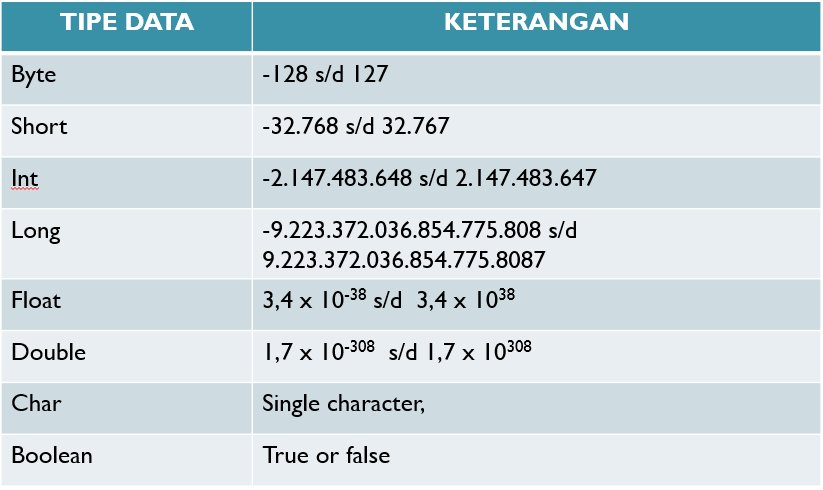

Memahami Jenis Tipe Data
.jpg?1676969394592)
Pemahaman tentang tipe data sangat penting terutama bagi Anda yang sedang belajar bahasa pemrograman untuk menjadi seorang programmer. Dengan mengetahui tipe data, Anda dapat menganalisis informasi atau data yang Anda dapatkan dan memilih tipe data yang tepat untuk menyimpan data tersebut.
Pengertian Tipe Data
Merupakan jenis data yang mampu ditangani oleh suatu bahasa pemrograman pada komputer, tiap-tiap bahasa pemrograman memiliki tipe data. Tipe data menggambarkan sifat-sifat dan struktur data, sehingga komputer tahu bagaimana cara memprosesnya. Setiap tipe data memiliki aturan dan ukuran yang berbeda terkait dengan penyimpanan, penggunaan, dan operasionalnya dalam program.
Jenis-jenis Tipe Data
- Boolean
- Character
- Byte
- Short Integer
- Integer
- Long Integer
- Float
- Double
Berikut ini merupakan tipe data yang digunakan pada bahasa pemrograman Java : 
Tipe Bilangan Real
Tipe bilangan real atau tipe data floating-point adalah salah satu jenis tipe data dalam pemrograman yang digunakan untuk merepresentasikan angka yang memiliki bagian desimal. Tipe data ini sangat penting karena sering digunakan dalam perhitungan matematika, fisika, yang melibatkan angka desimal. Tipe data bilangan real terdiri dari tiga jenis. Yaitu float, double, dan long double. Ketiga jenis tipe data ini memiliki ukuran penyimpanan yang berbeda. Contoh bilangan real adalah 34.265, -3.55, 0.0, dan 35.997E+
Tipe Data Karakter
- Char, Berisi hanya 1 karakter diapit tanda petik (' ')
- String, Terdiri dari beberapa karakter (maksimal 255) diapit tanda petik (" ")
- String[x], terdiri dari maksimal x karakter diapit tanda petik (' ')
Tipe Data Boolean
Adalah tipe data yang hanya bernilai benar (true) atau salah (false). Jangkauan (nilai yang mungkin) hanya 2 yaitu true dan false.
- Tipe Boolean, ukuran 1 byte
- Tipe Bool, ukuran 1 byte
Macam-macam Tipe Data
- Tipe Data Sederhana
- Tipe Data Terstruktur
- Tipe Data Penunjuk
Mari kita bahas satu persatu...
- Tipe Data Sederhana
- Numerik, terdiri dari:
- Numerik Integer (Bilangan bulat)
- Numerik Real (Bilangan riil)
- Karakter, terdiri dari:
- Alfabet: a...z, A...Z
- Angka: 0...9
- Simbol Khusus: + ? ' ! [] {} ... dll
- Boolean (logika), terdiri dari:
- True
- False
- Tipe Data Terstruktur
- Array (Larik)
- Record (Rekaman)
- File
- Set (Himpunan)
- Tipe Data Penunjuk
Tipe data sederhana adalah tipe data yang mampu menyimpan satu nilai pada setiap satu variabel. Adalah tipe data yang sudah ada dan dijadikan standar dalam bahasa pemrograman tertentu.Tipe sederhana ini merupakan tipe data dasar dan sering dipakai oleh setiap program. Berikut ini merupakan jenis data sederhana :
Tipe data terstruktur adalah tipe data yang dapat menyimpan lebih dari satu nilai atau data dalam satu variabel dan memiliki struktur tertentu. Tipe data terstruktur ini digunakan untuk menyimpan dan memanipulasi sejumlah data yang kompleks, beberapa jenis tipe data terstruktur yang umum digunakan dalam pemrograman antara lain:
Tipe data penunjuk atau pointer adalah tipe data terstruktur yang berisikan alamat memori dimana data disimpan. Tipe data ini digunakan untuk mengakses data yang disimpan di lokasi memori tertentu. Selain itu, tipe data penunjuk juga digunakan untuk mengalokasikan memori secara dinamis. Tipe data penunjuk ini sangat penting dalam pemrograman karena memungkinkan pengembang program untuk mengakses dan memanipulasi data secara efisien.
Deklarasi Tipe Data Dalam Bahasa Pemrograman
Dalam pemrograman, deklarasi tipe data adalah langkah awal untuk membuat variabel atau objek dengan menentukan jenis data yang akan disimpan dalamnya. Deklarasi tipe data memberi tahu bahasa pemrograman tentang cara mengalokasikan dan mengelola memori untuk variabel atau objek tersebut. Cara deklarasi tipe data dapat bervariasi tergantung pada bahasa pemrograman yang digunakan. Berikut adalah deklarasi tipe data dalam C++ :
| int age; // Mendeklarasikan variabel 'age' sebagai bilangan bulat (integer) float price; // Mendeklarasikan variabel 'price' sebagai bilangan pecahan (float) char initial; // Mendeklarasikan variabel 'initial' sebagai karakter (char) |
Setelah membaca tulisan diatas tentang Jenis Tipe Data. Selanjutnya kita akan belajar tentang materi lanjutan dari tipe data yaitu Tipe Data Array bisa dilihat pada Tutorial Belajar Bareng Part 4: Fungsi dan Pengertian Array klik disini untuk membaca tutorial Algoritma.